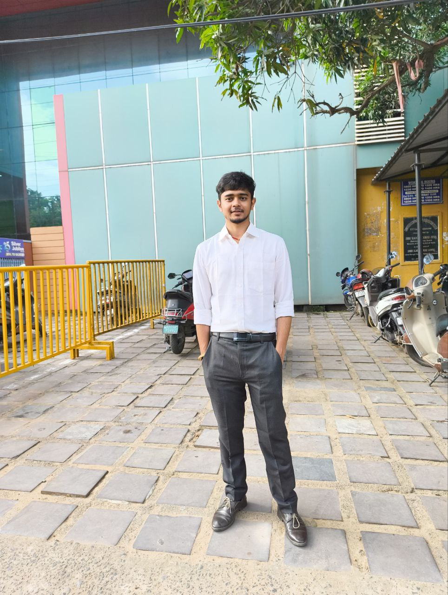

AI/ML & Data Analytics Engineer
I build intelligent systems — multi-agent AI platforms, RAG pipelines, and end-to-end analytics solutions. IEEE-published researcher. Computer Science graduate

I'm a Computer Science graduate from Kalinga Institute of Industrial Technology(KIIT Deemed to be University) Bhubaneswar, Odisha, India with hands-on experience building AI systems that work in production. My work sits at the intersection of Generative AI and Data Analytics — I've built multi-agent platforms with LangGraph, designed RAG pipelines with semantic retrieval, and built end-to-end analytics pipelines that integrate multi-source customer data into Tableau dashboards.
My research experience includes a Summer Research Internship at IIT Gandhinagar, where I developed deep learning models for parameter constraint prediction in the Two-Higgs-Doublet Model (2HDM). I engineered high-dimensional datasets, applied feature engineering on imbalanced data, and designed a neural network with regularization and dropout that improved prediction accuracy by 15%. Separately, I am the first author of an IEEE-published paper on COVID Image Classification using Xception with a custom attention mechanism, achieving 97.86% accuracy. Most recently, I completed a Software Engineering Internship at Viasat India, where I built analytics pipelines, developed customer segmentation and scoring models through feature engineering, and created interactive Tableau dashboards to support business decision-making.
I care about building things end-to-end: from model design and evaluation to deployable APIs and readable dashboards. I write about what I build on Medium.
Autonomous multi-agent data analytics platform. Upload a CSV or Excel file and nine specialized agents handle everything — data cleaning, statistical analysis, visualization, chart explanation, business translation, and a downloadable PDF report. Two interactive agents (natural language chart generation + sandboxed pandas query execution) let users ask questions directly against their data. LLM-generated pandas expressions are AST-validated before execution — allowlisted variables, blocked dangerous attributes, 5-second timeout. Every LLM step has a deterministic fallback so the platform runs end-to-end without an API key.
A context-aware Personalized AI Assistant built using a Retrieval-Augmented Generation (RAG) pipeline to serve as a digital representation of me. It intelligently answers questions about my skills, experience, projects, and background by retrieving information from a persistent knowledge base. Supports multi-source document ingestion, semantic search with FAISS, and LangChain-powered orchestration, making the assistant data-driven, extensible, and capable of delivering accurate, grounded responses.
Classified COVID vs. non-COVID chest X-rays at 97.86% accuracy using Xception with custom attention mechanisms. The attention head improved feature localization on infected regions, outperforming baseline transfer learning by a significant margin. Research published in IEEE.
Scientific ML research at IIT Gandhinagar. Generated 25 large-scale datasets (500K rows each) representing constrained parameter variations in the Two-Higgs-Doublet Model. Built a hybrid neural network + XGBoost architecture with regularization and dropout to constrain 2HDM parameters — achieving 15% improvement over traditional methods. Produced comprehensive visualizations for high-dimensional parameter spaces.
IIT Gandhinagar
Research internship on scientific ML applied to the Two-Higgs-Doublet Model in particle physics.
Edureka
Advanced deep learning: CNNs, RNNs, LSTM, and transformer architectures for real-world applications.
Edureka
Specialized certification in building and training supervised and unsupervised ML models.
Edureka
Python and SQL fundamentals for Machine Learning and Data Science applications.
Edureka
Comprehensive program covering supervised learning, unsupervised learning, and neural networks with practical implementations.
Forage — JPMorgan Chase & Co.
Practical task-based agile and scrum simulations mirroring JPMC engineering workflows.
Open to roles in applied ML, NLP, document intelligence, LLM infrastructure, and data analytics. Remote-friendly.